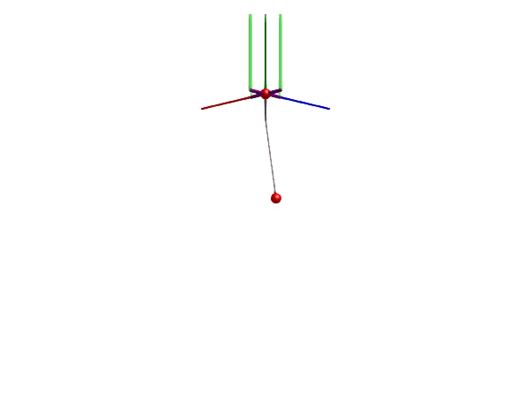

Quadrotor with cable-suspended load

This example builds a simple model of a quadrotor that carries a load suspended by a cable. The quadrotor has four arms, each with a thruster at the end. The quadrotor is controlled by three PID controllers: one for altitude, one for roll, and one for pitch (for simplicity, no position controller is included here).
The main body of the aircraft is modeled using a Body, and the arms are modeled using BodyCylinder components. The total inertia of the body and arms are automatically computed using the geometry and density properties of the bodies involved. The thrusters are modeled using a custom component called Thruster that applies a force in the y-direction. The thruster model is kinematical only, and does not model the rotation dynamics of the motors or any aerodynamics. The quadrotor is connected to the world frame using a FreeMotion joint, which allows the quadrotor to move freely in space.
using Multibody
using ModelingToolkit
using ModelingToolkitStandardLibrary.Blocks
using LinearAlgebra
using Plots
using JuliaSimCompiler
using OrdinaryDiffEq
using Test
t = Multibody.t
D = Differential(t)
world = Multibody.world
num_arms = 4 # Number of arms of the rotor craft.
angle_between_arms = 2*pi/num_arms # Angle between the arms, assuming they are evenly spaced.
arm_length = 0.2 # Length of each arm.
arm_outer_diameter = 0.03
arm_inner_diameter = 0.02
arm_density = 800 # Density of the arm [kg/m³].
body_mass = 0.2 # Mass of the body.
load_mass = 0.1 # Mass of the load.
cable_length = 1 # Length of the cable.
cable_mass = 5 # Mass of the cable.
cable_diameter = 0.01 # Diameter of the cable.
number_of_links = 5 # Number of links in the cable.
# PID Controller parameters
kalt = 2.7
Tialt = 3
Tdalt = 0.5
kroll = 0.2
Tiroll = 100
Tdroll = 1
kpitch = 0.2
Tipitch = 100
Tdpitch = 1
@mtkmodel Thruster begin
@structural_parameters begin
clockwise = true
end
@components begin
frame_b = Frame()
thrust3d = WorldForce(resolve_frame = :frame_b, scale=0.1, radius=0.02) # The thrust force is resolved in the local frame of the thruster.
torque3d = WorldTorque(resolve_frame = :frame_b, scale=0.1, radius=0.02) # Using the thruster also causes a torque around the force axis.
thrust = RealInput()
end
@parameters begin
torque_constant = 1, [description="Thrust force to torque conversion factor [Nm/N]"]
end
@variables begin
u(t), [state_priority=1000]
ut(t), [state_priority=1000]
end
@equations begin
thrust3d.force.u[1] ~ 0
thrust3d.force.u[2] ~ thrust.u
thrust3d.force.u[3] ~ 0
torque3d.torque.u[1] ~ 0
torque3d.torque.u[2] ~ (clockwise ? ut : -ut)
torque3d.torque.u[3] ~ 0
thrust.u ~ u
ut ~ torque_constant*u
connect(frame_b, thrust3d.frame_b)
connect(frame_b, torque3d.frame_b)
end
end
function RotorCraft(; closed_loop = true, addload=true, L=nothing, outputs = nothing, pid=false)
arms = [
BodyCylinder(
r = [arm_length*cos(angle_between_arms*(i-1)), 0, arm_length*sin(angle_between_arms*(i-1))],
diameter = arm_outer_diameter,
inner_diameter = arm_inner_diameter,
density = arm_density,
name=Symbol("arm$i"),
) for i = 1:num_arms
]
@variables begin
y_alt(t), [state_priority=2]
y_roll(t), [state_priority=2]
y_pitch(t), [state_priority=2]
y_yaw(t), [state_priority=2]
y_forward(t), [state_priority=2]
y_sideways(t), [state_priority=2]
v_alt(t)=0, [state_priority=2]
v_roll(t)=0, [state_priority=2]
v_pitch(t)=0, [state_priority=2]
v_yaw(t)=0, [state_priority=2]
v_forward(t)=0, [state_priority=2]
v_sideways(t)=0, [state_priority=2]
(Ie_alt(t)=0), [description="Integral of altitude error"]
yIe_alt(t)
end
thrusters = [Thruster(name = Symbol("thruster$i"), clockwise = (i-1) % 2 == 0) for i = 1:num_arms]
@named body = Body(m = body_mass, state_priority = 100, I_11=0.01, I_22=0.01, I_33=0.01, air_resistance=1, isroot=true)
# @named freemotion = FreeMotion(state=true, isroot=true, quat=false) # We use Euler angles to describe the orientation of the rotorcraft.
connections = [
# connect(world.frame_b, freemotion.frame_a)
# connect(freemotion.frame_b, body.frame_a)
y_alt ~ body.r_0[2]
y_roll ~ body.phi[3]
y_pitch ~ body.phi[1]
y_yaw ~ body.phi[2]
y_forward ~ body.r_0[1]
y_sideways ~ body.r_0[3]
v_alt ~ D(body.r_0[2])
v_roll ~ D(body.phi[3])
v_pitch ~ D(body.phi[1])
v_yaw ~ D(body.phi[2])
v_forward ~ D(body.r_0[1])
v_sideways ~ D(body.r_0[3])
D(Ie_alt) ~ y_alt
yIe_alt ~ Ie_alt
[connect(body.frame_a, arms[i].frame_a) for i = 1:num_arms]
[connect(arms[i].frame_b, thrusters[i].frame_b) for i = 1:num_arms]
]
systems = [world; arms; body; thrusters]
if addload
@named load = Body(m = load_mass, air_resistance=0.1)
@named cable = Rope(
l = cable_length,
m = cable_mass,
n = number_of_links,
c = 0,
d = 0,
air_resistance = 0.1,
d_joint = 0.1,
radius = cable_diameter/2,
color = [0.5, 0.4, 0.4, 1],
dir = [0.0, -1, 0]
)
push!(systems, load)
push!(systems, cable)
push!(connections, connect(body.frame_a, cable.frame_a))
push!(connections, connect(cable.frame_b, load.frame_a))
end
if closed_loop # add controllers
if pid
# Mixing matrices for the control signals
@parameters Galt[1:4] = ones(4) # The altitude controller affects all thrusters equally
@parameters Groll[1:4] = [-1,0,1,0]
@parameters Gpitch[1:4] = [0,1,0,-1]
@named Calt = PID(; k=kalt, Ti=Tialt, Td=Tdalt)
@named Croll = PID(; k=kroll, Ti=Tiroll, Td=Tdroll)
@named Cpitch = PID(; k=kpitch, Ti=Tipitch, Td=Tdpitch)
uc = Galt*Calt.ctr_output.u + Groll*Croll.ctr_output.u + Gpitch*Cpitch.ctr_output.u
uc = collect(uc)
append!(connections, [thrusters[i].u ~ uc[i] for i = 1:num_arms])
append!(connections, [
Calt.err_input.u ~ -y_alt
Croll.err_input.u ~ -y_roll
Cpitch.err_input.u ~ -y_pitch
])
append!(systems, [Calt; Croll; Cpitch])
else # LQR
@named feedback_gain = Blocks.MatrixGain(K = L)
@named system_outputs = RealOutput(nout=length(outputs))
@named system_inputs = RealInput(nin=num_arms)
append!(connections, [system_outputs.u[i] ~ outputs[i] for i = 1:length(outputs)])
append!(connections, [thrusters[i].thrust.u ~ system_inputs.u[i] for i = 1:num_arms])
push!(connections, connect(system_outputs, :y, feedback_gain.input)) # Connect outputs to controller
push!(connections, connect(feedback_gain.output, :u, system_inputs)) # Connect controller to inputs
push!(systems, feedback_gain)
push!(systems, system_outputs)
push!(systems, system_inputs)
end
end
@named model = ODESystem(connections, t; systems)
complete(model)
end
model = RotorCraft(closed_loop=true, addload=true, pid=true)
model = complete(model)
ssys = structural_simplify(multibody(model))
# display(unknowns(ssys))
op = [
model.body.v_0[1] => 0;
collect(model.cable.joint_2.phi) .=> 0.03;
]
prob = ODEProblem(ssys, op, (0, 20))
sol = solve(prob, FBDF(autodiff=false), reltol=1e-8, abstol=1e-8)
@test SciMLBase.successful_retcode(sol)
plot(sol, idxs=[model.arm1.frame_b.r_0[2], model.arm2.frame_b.r_0[2], model.arm3.frame_b.r_0[2], model.arm4.frame_b.r_0[2]], layout=4, framestyle=:zerolines)
import GLMakie
render(model, sol, 0:0.1:sol.t[end], x=-3, z=-3, y=-1, lookat=[0,-1,0], show_axis=false, filename="quadrotor.gif", framerate=25)The green arrows in the animation indicate the force applied by the thrusters.
LQR control design
Below, we demonstrate a workflow where the model is linearized and an LQR controller is designed to stabilize the quadrotor. We linearize the model using the function named_ss from ControlSystemsMTK, this gives us a linear statespace model with named inputs and outputs. We then design an LQR controller using the lqr function from ControlSystems.jl. Since lqr operates on the state realization of the system, but ModelingToolkit gives no guaratees about what the state realization will be, we specify the LQR penalty matrix in terms of the outputs using the system output matrix $C$.
using ControlSystemsBase, RobustAndOptimalControl, ControlSystemsMTK
quad = RotorCraft(closed_loop=false, addload=false)
quad = complete(quad)
inputs = [quad.thruster1.u; quad.thruster2.u; quad.thruster3.u; quad.thruster4.u]
outputs = [quad.y_alt, quad.y_roll, quad.y_pitch, quad.y_yaw, quad.y_forward, quad.y_sideways, quad.v_alt, quad.v_roll, quad.v_pitch, quad.v_yaw, quad.v_forward, quad.v_sideways, quad.yIe_alt]
op = [
quad.body.r_0[2] => 1e-32
quad.v_alt => 1e-32 # To avoid singularity in linearization
quad.world.g => 9.81
inputs .=> 1;
] |> Dict
@time lsys = named_ss(multibody(quad), inputs, outputs; op)
rsys = minreal(sminreal(lsys))
C = rsys.C
rank(C) >= rsys.nx || @warn "The output matrix C is not full rank"
Q = Diagonal([ # Output penalty matrix
30 # Altitude
1 # Roll
1 # Pitch
1 # Yaw
1 # Forward
1 # Sideways
20 # Altitude velocity
1 # Roll velocity
1 # Pitch velocity
1 # Yaw velocity
10 # Forward velocity
10 # Sideways velocity
5 # Altitude integral error
])
R = I(4)
L = lqr(rsys, Symmetric(C'Q*C), R)/C
trunc_zero!(A) = A[abs.(A) .< 1e4eps(maximum(abs, A))] .= 0
trunc_zero!(L)
L4×13 Matrix{Float64}:
3.59025 -6.38621 0.0 -0.5 -0.707107 … -2.45337 0.0 1.11803
3.59025 0.0 6.38621 0.5 0.0 0.0 -2.45337 1.11803
3.59025 6.38621 0.0 -0.5 0.707107 2.45337 0.0 1.11803
3.59025 0.0 -6.38621 0.5 0.0 0.0 2.45337 1.11803ModelingToolkit.get_iv(i::IRSystem) = i.t
model = RotorCraft(; closed_loop=true, addload=true, L=-L, outputs) # Negate L for negative feedback
model = complete(model)
ssys = structural_simplify(multibody(model))
op = [
model.body.r_0[2] => 1e-3
model.body.r_0[3] => 1e-3
model.body.r_0[1] => 1e-3
collect(model.cable.joint_2.phi) .=> 0.1 # Usa a larger initial cable bend since this controller is more robust
model.world.g => 9.81;
collect(model.body.phid) .=> 0;
collect(D.(model.body.phi)) .=> 0;
model.feedback_gain.input.u[9] => 0;
model.feedback_gain.input.u[12] => 0;
model.Ie_alt => -10; # Initialize the integrator state to avoid a very large initial transient. This pre-compensates for gravity
] |> Dict
prob = ODEProblem(ssys, op, (0, 20))
sol = solve(prob, FBDF(autodiff=false))
@test SciMLBase.successful_retcode(sol)
plot(sol, idxs=[model.arm1.frame_b.r_0[2], model.arm2.frame_b.r_0[2], model.arm3.frame_b.r_0[2], model.arm4.frame_b.r_0[2]], layout=4, framestyle=:zerolines)
render(model, sol, 0:0.1:sol.t[end], x=-2, z=-2, y=-1, lookat=[0,-1,0], show_axis=false, filename="quadrotor_lqr.gif", framerate=25)The observant reader may have noticed that we linearized the quadrotor without the cable-suspended load applied, but we simulated the closed-loop system with the load. Thankfully, the LQR controller is robust enough to stabilize the system despite this large model error. Before being satisfied with the controller, we should perform robustness analysis. Below, we compute sensitivity functions at the plant output and input and plot their sigma plots, as well as simultaneous diskmargins at the plant output and input.
# NOTE: this section is temporarily disabled waiting for improved performance in linearization
# linop = merge(op, Dict([
# collect(model.system_outputs.u) .=> 0
# collect(model.body.r_0) .=> 1e-32
# collect(model.load.v_0) .=> 1e-32 # To avoid singularity in linearization
# collect(model.system_outputs.u) .=> 1e-32
# collect(model.feedback_gain.input.u) .=> 1e-32
# ]))
# @time "Sensitivity function" S = get_named_sensitivity(model, :y; system_modifier=IRSystem, op=linop)
# S = minreal(S, 1e-6)
# isstable(S) || @error "Sensitivity function S is not stable"
# T = I(S.ny) - S
# T = minreal(T, 1e-6)
# isstable(T) || @error "Sensitivity function T is not stable"
# LT = feedback(T, -I(T.ny))#get_named_looptransfer(model, :y; system_modifier=IRSystem, op)
# @time "Comp Sensitivity function" Ti = get_named_comp_sensitivity(model, :u; system_modifier=IRSystem, op=linop)
# Ti = minreal(Ti, 1e-6)
# isstable(Ti) || @error "Sensitivity function Ti is not stable"
# LTi = feedback(Ti, -I(Ti.ny)) # Input loop-transfer function
# CS = named_ss(model, :y, :u; op=linop, system_modifier=IRSystem) # Closed-loop system from measurement noise to control signal
# w = 2pi.*exp10.(LinRange(-2, 2, 200))
# fig_dm = plot(diskmargin(LT, 0.5), label="Plant output") # Compute diskmargin with a positive skew of 0.5 to account for a likely gain increase when the load is dropped
# plot!(diskmargin(LTi, 0.5), label="Plant input", titlefontsize=8) # Note, simultaneous diskmargins are somewhat conservative
# plot(
# sigmaplot(S, w, hz=true, label="", title="S", legend=false),
# sigmaplot(T, w, hz=true, label="", title="T", legend=false),
# sigmaplot(LT, w, hz=true, label="", title="L", legend=false),
# bodeplot(CS, w, hz=true, label="", title="CS", legend=false, plotphase=false, layout=1),
# fig_dm,
# layout=(2,3), size=(800,500), legend=:bottomright, ylims=(1e-4, Inf),
# )
nothingWhile gain and phase margins appear to be reasonable, we have a large high-frequency gain in the transfer functions from measurement noise to control signal, $C(s)S(s)$. For a rotor craft where the control signal manipulates the current through motor windings, this may lead to excessive heat generation in the motors if the sensor measurements are noisy.
The diskmargin at the plant output is small, luckily, the gain variation appears at the plant input where the diskmargin is significantly larger. The diskmargins are visualized in the figure titled "Stable region for combined gain and phase variation". See Diskmargin example to learn more about diskmargins.